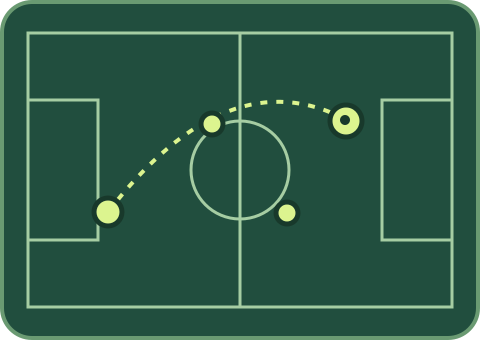

Back to football
45 minutes of light drills and small-sided games. Suitable for people returning to the sport.
COMMUNITY FOOTBALL / FICTIONAL DEMO
Two weekly sessions for adults. Choose the group that fits how you want to play.
Try an open day
45 minutes of light drills and small-sided games. Suitable for people returning to the sport.
An hour of small-sided games. Teams are picked on the day.
Bring water, trainers and a layer for outdoors. Both sessions use the fictional Northbank Community Pitch.